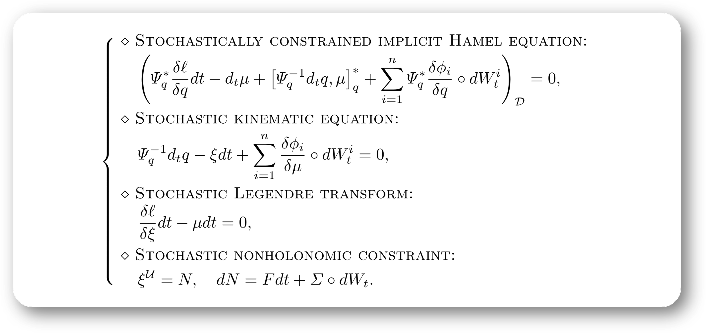

Tian-Zhi Li 李天志
About me
Hi! I am a final-year PhD student at School of Advanced Manufacturing and Robotics, Peking University (Advisor: Prof. Jinzhi Wang). Also, I am currently a visiting PhD student (Advisor: Prof. François Gay-Balmaz) at Nanyang Technological University (NTU) in Singapore. Prior to that, I received my B.Sc. in Mathematics from Beijing Institute of Technology (BIT) in 2021 (Advisor: Prof. Donghua Shi).
Research Interest
My research interest lies at geometric modeling and simulation of dynamical systems, which includes the following topics:
Geometric Mechanics & Control (especially Stochastic & Nonholonomic)
Geometric Numerical Integration (Variational Integrators)
Geometric Estimation and Filtering (for Robot Systems & Flexible Systems)
Physics-Informed Learning on Manifolds
Selected Research
Variational Principle for Stochastic Nonholonomic Systems Part II: Stochastic Nonholonomic Integrator International Conference on Geometric Science of Information (GSI 2025), Saint-Malo, France. Lecture Notes in Computer Science, vol 16034, pp. 225-233. Springer, Cham, 2026. We propose stochastic discrete variational principles for stochastic nonholonomic systems and construct the associated stochastic nonholonomic integrator. |
|  | Variational Principle for Stochastic Nonholonomic Systems Part I: Continuous-Time Formulation International Conference on Geometric Science of Information (GSI 2025), Saint-Malo, France. Lecture Notes in Computer Science, vol 16034, pp. 204-213. Springer, Cham, 2026. We derive stochastic variational principles for stochastic unconstrained and stochastic nonholonomically constrained systems. An interesting example of the stochastic rolling disk is given to demonstrate the effectivness of the proposed approach. |
 |
Variational Unscented Kalman Filter on Matrix Lie Groups Automatica, 172: 111995, 2025 (Regular Paper). We propose a family of computationally efficient unscented Kalman filters (UKF-Vs) for mechanical systems on matrix Lie groups. |
Reduced Dynamics and Geometric Optimal Control of Nonequilibrium Thermodynamics: Gaussian Case Automatica, 164: 111626, 2024 (Regular Paper). We study the geometric structures of n-DOF Gaussian distributions, and we propose a geometric optimal control algorithm for minimum-energy optimal control problem of Gaussian distributions. |
 |
Physics-Informed Gaussian Process Learning on Lie Groups Journal of Guidance, Control, and Dynamics, 48 (11), pp. 2654-2662, 2025. We introduce a physics-informed Gaussian process learning method for mechanical systems on Lie groups and on a special class of homogeneous manifolds based on discrete mechanics theory. |
News
Sep 2025: I am so happy and excited to recieve the National Scholarship (top 1%) from Chinese Ministry of Education!
Aug 2025: Our paper Structure-Preserving Unscented Kalman Filter for Planar Mobile Robots has been accepted to IEEE Control Systems Letters (IEEE L-CSS).
Aug 2025: Our paper Physics-Informed Gaussian Process Learning on Lie Groups has been accepted to Journal of Guidance, Control, and Dynamics (JGCD).
Jul 2025: Our two papers Variational Principle for Stochastic Nonholonomic Systems Part I & Part II (joint work with Professors François Gay-Balmaz, Donghua Shi, and Jinzhi Wang) have been accepted by the International Conference on Geometric Science of Information (GSI 2025).
Jun 2025: I am humbled and beyond grateful to recieve the PKU Presidential Doctoral Scholarship (2025-2026)!
Dec 2024: I am so happy and excited to be a visiting student under the supervision of Prof. François Gay-Balmaz at Nanyang Technological University (NTU) in Singapore!
Nov 2024: I am very honored to recieve the PKU-CoE Presidential Doctoral Scholarship (First Prize), 2024-2025!
Sep 2024: Our paper Variational Unscented Kalman Filter on Matrix Lie Groups has been accepted to Automatica.
Jul 2024: I was thrilled to present “Stochastic Nonholonomic Variational Principle” at the Geometric Mechanics & Control Seminar (BIT) organized by Prof. Donghua Shi. The discussion with Prof. Hiroaki Yoshimura and Prof. Linyu Peng was very insightful and interesting!
Jul 2024: I am so happy to announce that I am awarded the CSC Scholarship! I will be a visiting student of Prof. François Gay-Balmaz at Nanyang Technological University (NTU) for a 12-month academic visit.
Apr 2024: I was thrilled to give a talk about my PhD work at Beijing Institute of Technology (BIT) invited by Prof. Qiang Tian and Prof. Ju Chen. The discussion was very insightful and interesting!
Feb 2024: Our paper Reduced Dynamics and Geometric Optimal Control of Nonequilibrium Thermodynamics: Gaussian Case has been accepted by Automatica.
Aug 2023: I was thrilled to present “Multisymplectic Unscented Kalman Filter for Geometrically Exact Beams” at the 6th International Conference on Geometric Science of Information (GSI)! I am very grateful to Prof. Hiroaki Yoshimura and Dr. Christian Offen for their valuable comments and suggestions on my work! Also, I was very lucky to meet Stephanie Chen, Juliette Florin, Daiying Yin, and Takemi Nakamura. We had some happy time at Saint-Malo, France!
Jul 2023: I was honored to present ’'Variational Unscented Kalman Filter on Lie Groups’’ at the Geometric Mechanics & Control Seminar (BIT) organized by Prof. Donghua Shi and Prof. Dmitry Zenkov.